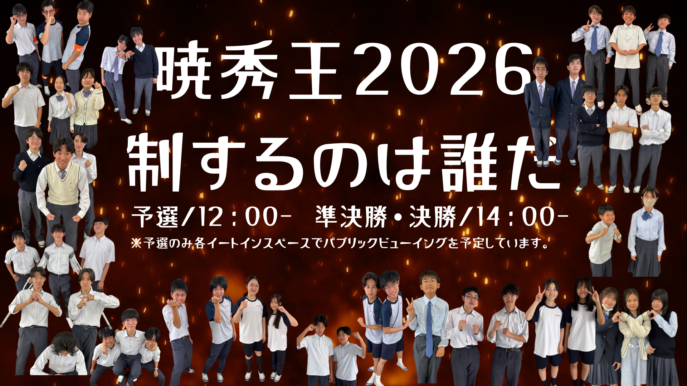
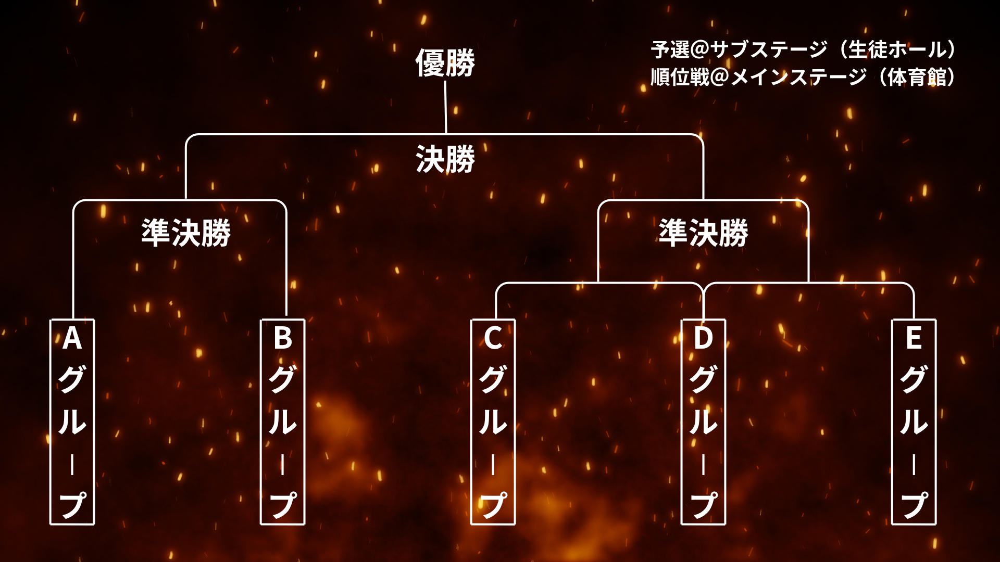
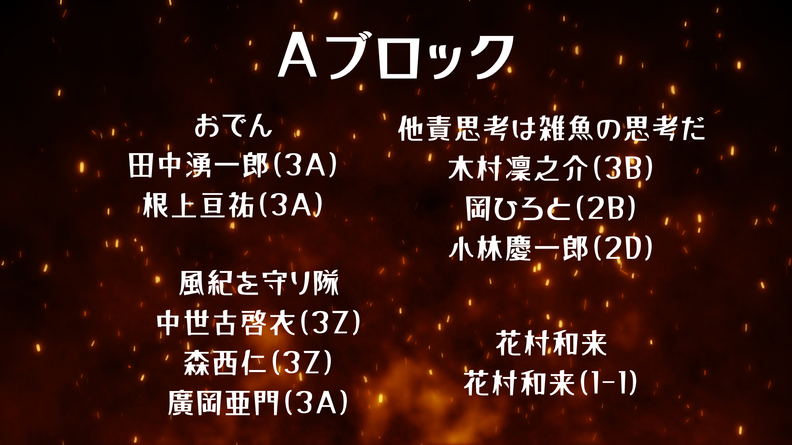
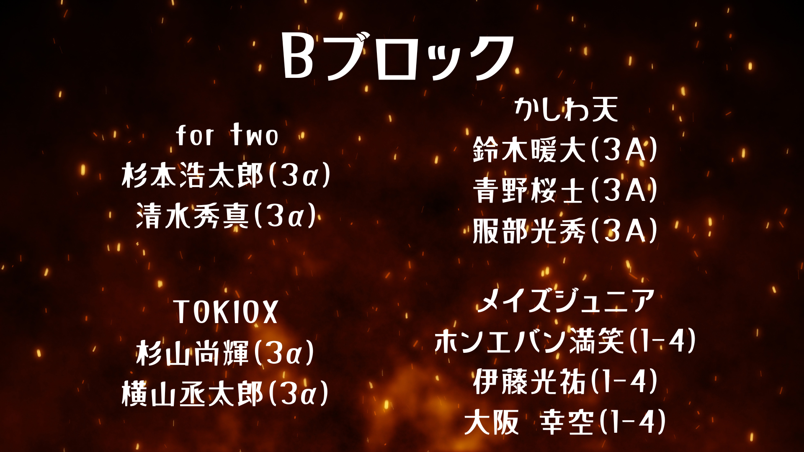
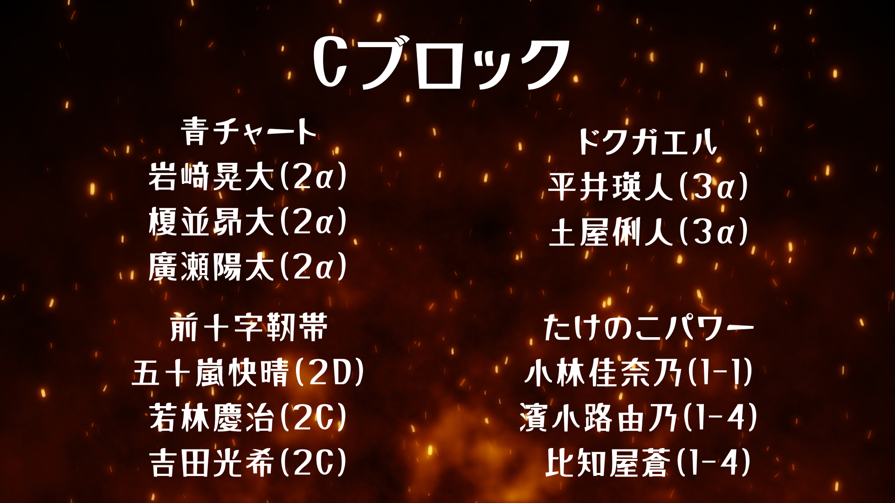
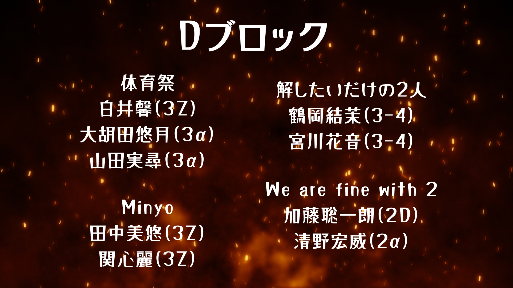
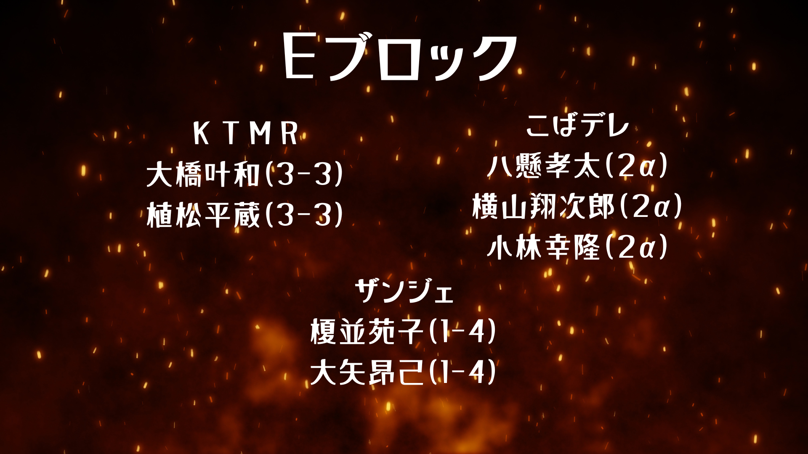

| 番号 | 団体名 | メンバー | ジャンル | 曲 |
|---|---|---|---|---|
| 1 | AKRS | 神田桜 竹内凜 吉川喜子 宮川明浬 |
ダンス | ① LILY, JIWOO & KYUJINの Ridin′ ② デミ・ロヴァートのsorry not sorry Remix ③ MEOVVのMEOW Remix ④ Doja cat の boss bitch ⑤ XGの Is this love |
| 2 | 加藤紗和 | 加藤紗和 | カラオケ | HANA — Bluejeans |
| 3 | 大矢晃己 | 大矢晃己 | カラオケ | 僕のこと — Mrs.GREEN APPLE |
| 4 | 花村和来 | 花村和来 | カラオケ | ANTENNA — Mrs. Green Apple |
| 5 | 杉山遼太 | 杉山遼太 | カラオケ | 阿修羅ちゃん — Ado |
| 6 | Nocturne | 杉山桜子 三輪明凛 |
カラオケ | 点描の唄 — Mrs. Green Apple feat. 井上苑子 |
| 7 | ななゆきだるま | 西田有希 長田七海 |
連弾 | ライラック — Mrs.GREEN APPLE |
| 8 | Simple is best | 高橋暖士 佐藤伸一 杉山尚輝 |
弾き語り | マリーゴールド — あいみょん |
| 番号 | 団体名 | メンバー | ジャンル | 曲 |
|---|---|---|---|---|
| 1 | BLUE NOVA | 竹内凜 井手花 勝間田結夢 |
ダンス | ① Jump (remix) — BLACKPINK ② Rude boy (remix) — Rihanna ③ As if it's your last — BLACKPINK |
| 2 | SA Crew | 髙木彩賀 柿島幸来 |
ダンス | あなた 宇多田ヒカル WOKE UP XG Gnarly KATSEYE |
| 3 | 南綾音 | 南綾音 | ピアノ演奏 | かわいいだけじゃだめですか？ 好きすぎて滅! IRIS OUT |
| 4 | REDSTARS | 井上陽生 善田そうし 青木はるか 菅井貴弘 |
バンド | 空も飛べるはず — スピッツ |
| 5 | 狂人集会 | 岩村慎之介 遠藤あさひ 安部菜未 |
バンド | ロキ — みきとP |
| 6 | Escapeee | 真瀬直史 田中梨央 渡辺優月 安田恵 工藤瑞生 |
バンド | 阿修羅ちゃん — Ado |
| 7 | バンド愛まみこ | 渡邉さくら 十河楓 長澤貴彩 小山実春 河北和奏 |
バンド | 前前前世 (movie ver.) — RADWIMPS |






